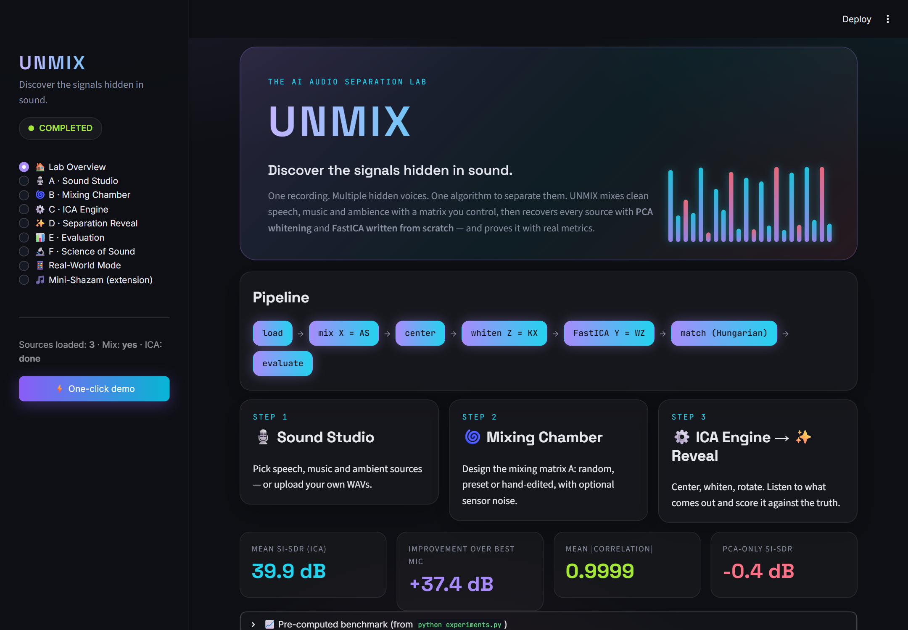
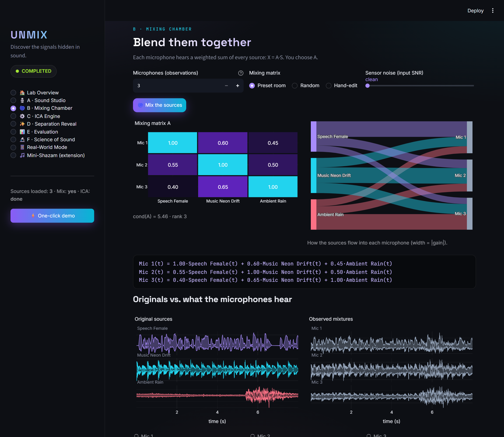
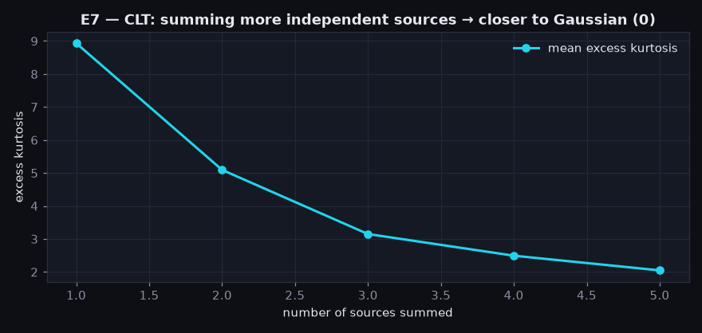
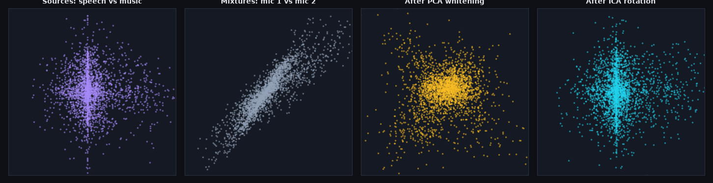
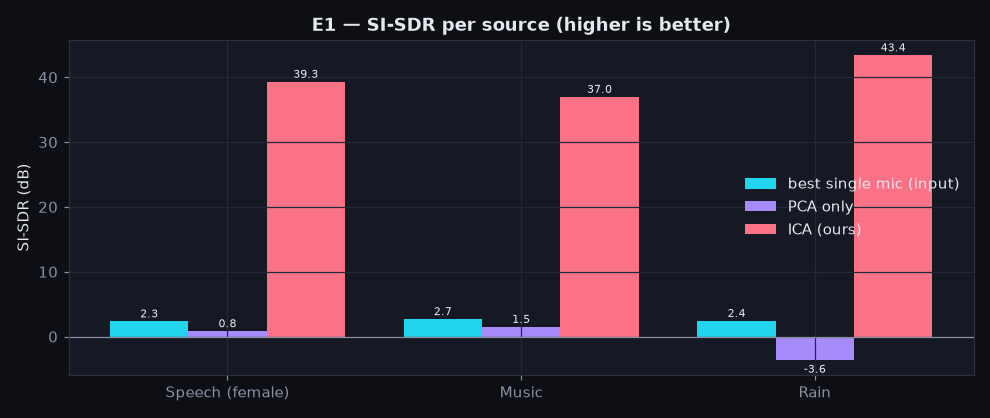
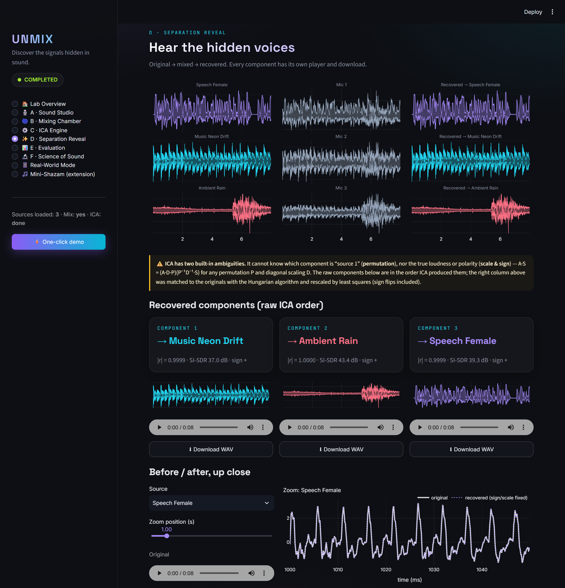
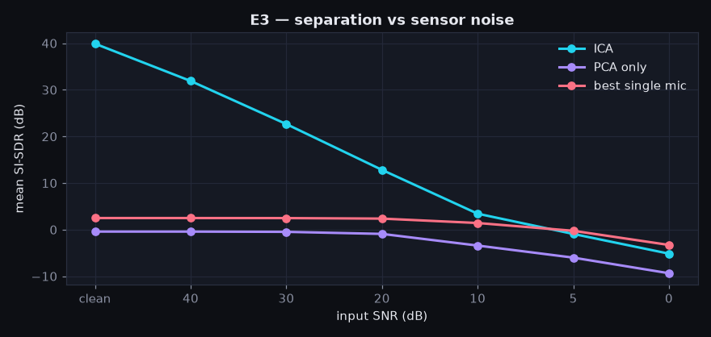
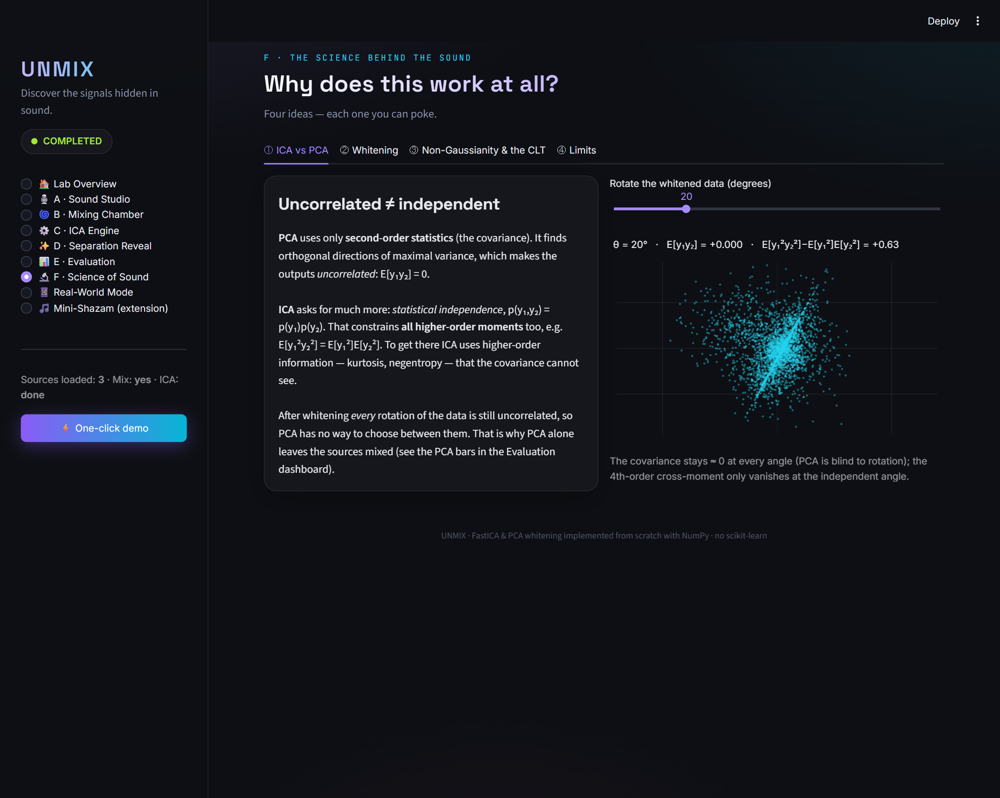
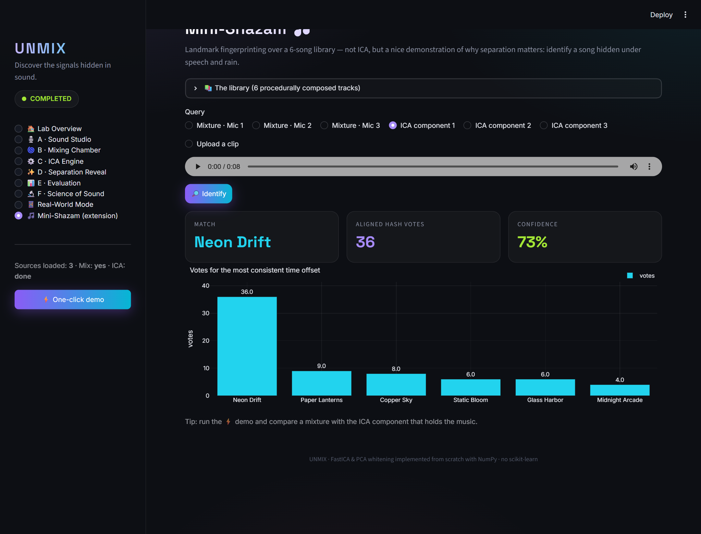

How we taught a computer to pull voices out of a noisy room
What was built, how every piece works, and why each decision was made, explained
from zero. No prior knowledge of signal processing or linear algebra needed.
Project repo: github.com/AnjaniChitlangia/Unmix-the-Signal“Discover the signals hidden in sound.”
Contents
What's inside
1 The problem in one picture
2 What we built (the big picture)
3 The sounds we used, and why
4 Step 1–2: getting sounds ready
5 Step 3: mixing (making the mess)
6 Step 4–5: centering & whitening
7 Step 6: ICA, the actual unmixing
8 Why ICA and not PCA?
9 The two things ICA can never know
10 How we measured success
11 The experiments & what we found
12 The app, page by page
13 Bonus features
14 Testing: how we know it works
15 Every file, explained
16 How to run it yourself
17 Limits & what could come next
18 Glossary
How to read this guide
Each chapter answers three questions: what was done, how it was done, and why. Look out for
these coloured boxes:
🍹 Everyday analogyA real-life comparison that makes the idea click.
💡 Why we did it this wayThe reasoning behind a decision.
⚠️ Watch outA limitation or a common misunderstanding.
✅ ResultA real number measured by the project. Nothing in this guide is made up:
every number comes from running experiments.py.
Dark boxes contain a small piece of maths. You can skip them. The text around them always explains the
same idea in words.
Chapter 1
1The problem in one picture
Imagine you are at a party. A friend is talking to you, music is playing, and it is raining
outside. Your ears hear all three at once, blended together. Yet your brain can somehow focus on your
friend's voice. This is called the cocktail party problem.
Now replace your ears with three microphones placed in different spots in the room. Each microphone
records a slightly different blend: the one near your friend hears mostly the voice, the one near the speaker
hears mostly music, and so on. But every microphone hears a bit of everything.
The challenge: we only get the three messy recordings. We are not told what the original sounds were,
and we are not told how strongly each sound reached each microphone. From the mess alone, can a computer
recover the three clean sounds?
The answer is yes, using a method called Independent Component Analysis (ICA). That is what this
whole project is about.
🍹 Everyday analogy: the smoothie
Three friends each make a smoothie from the same three fruits (strawberry, banana, mango), but each uses a
different amount of each fruit. You get to taste the three smoothies, but nobody tells you the recipes. ICA is a
clever way of working out what each pure fruit tastes like, just from tasting the three blends.
What the challenge asked for
Requirement
Where it is done in UNMIX
Choose clean sources (speech, music, ambient); mix N sources into ≥ N signals with our own mixing matrix
Chapters 3 and 5; audio_utils.py; the Mixing Chamber page
Center the mixed signals
Chapter 6; whitening.py → center()
PCA whitening using covariance + eigendecomposition, written ourselves
Chapter 6; whitening.py → pca_whiten()
ICA from scratch (e.g. FastICA), no library ICA
Chapter 7; ica.py → fastica()
Export separated signals as playable audio
audio_utils.py → save_wav(); download buttons in the app
Evaluate against originals, handling order and scale ambiguity
Chapters 9–10; evaluation.py
Bonus: PCA vs ICA, noise levels, real recordings, mini-Shazam
Chapters 8, 11, 13
Chapter 2
2What we built (the big picture)
UNMIX is an interactive "audio lab" that runs in your web browser. You can pick sounds, mix
them, separate them again, listen to every stage, and see exactly how well the separation worked.
Behind the friendly screen there are three layers:
The maths engine: the part that actually separates sounds. Written by hand in Python using NumPy (a
library for fast number crunching). No ready-made ICA library was used.
The measuring tools: code that checks how close the separated sounds are to the real originals.
The interface: a website built with Streamlit (a Python tool that turns scripts into web apps), with
charts made in Plotly.
The pipeline: the journey of a sound
Every run follows the same assembly line. Each step is explained in its own chapter.

The home page of the app. The
“pipeline” chips light up as each stage is completed, and the status pill (top-left) shows READY → MIXING →
SEPARATING → COMPLETED.
💡 Why build an app instead of just a script?
Separation is something you have to hear to believe. A script can print “correlation = 0.9999”, but
pressing play on a messy recording and then on a clean recovered voice is far more convincing, especially
in a live hackathon demo. The app also lets anyone experiment (change the mix, add noise) without writing code.
Chapter 3
3The sounds we used, and why
To test separation fairly, we need clean original sounds, so that afterwards we can compare
what ICA recovered with the truth.
Sound
Type
How it was made
Stored as
speech_female
speech
Windows' built-in text-to-speech voice “Zira” reading a sentence
22 050 Hz, mono
speech_male
speech
Windows voice “David” reading a fake news bulletin
22 050 Hz, mono
music_neon_drift
music
Composed by code: plucked-string synth, bass, drums
44 100 Hz, stereo
ambient_rain
ambient
Code-generated: hiss + random raindrops + wind + thunder
48 000 Hz, stereo
ambient_birds
ambient
Code-generated bird chirps (sweeping tones)
16 000 Hz, mono
💡 Why generate sounds instead of downloading them?
No copyright problems: everything is ours, so the repository can be shared freely.
Perfectly clean: real recordings always contain a bit of background noise. Generated sounds are
100% one source, which makes the evaluation honest.
Reproducible: anyone can run generate_sources.py and get the exact same files.
💡 Why are they stored in different formats on purpose?
Real-world audio files are messy: some are stereo (two channels), some mono; some are recorded 16 000 times per
second, others 48 000 times per second. We deliberately stored our files in different formats so that the
loading code is genuinely tested. It must convert all of them into one common format before mixing.
A tiny bit of audio basics
A digital sound is just a long list of numbers. Each number is the air pressure (how far the speaker
cone is pushed) at one instant. The sample rate is how many numbers per second: 16 000 Hz means 16 000
numbers for every second of sound. An 8-second clip at 16 kHz is therefore a list of 128 000 numbers.
🍹 Everyday analogy: a flip-book
A sample rate is like the number of pages in a flip-book per second. More pages give smoother motion. To compare
two flip-books page by page, they must have the same number of pages per second. That is why we
resample everything to 16 kHz first.
A mixing matrix sounds scary, but it is just a table of volumes: row = microphone, column =
source, and each cell says “how loud is this source in this microphone?”
Chapter 4 · Pipeline steps 1–2
4Getting the sounds ready
Before any clever maths, every sound file goes through a cleaning routine in
audio_utils.py. Think of it as washing and chopping the vegetables before cooking.
Read the file. WAV files store numbers in different ways (whole numbers from −32 768 to 32 767, or
decimals). We convert everything to decimals between −1 and +1. Why: so all sounds speak the same “language”.
Stereo → mono. If a file has left and right channels, we average them into one. Why: each
source should be one signal. Stereo would count as two.
Resample to 16 000 Hz using a “polyphase” filter from SciPy, which avoids distortion (aliasing)
when changing speed. Why: mixing requires sample #1 of every sound to line up with sample #1 of the
others (the flip-book analogy).
Make lengths equal. Trim every sound to the length of the shortest. Why: you can't add a
10-second list to an 8-second list number by number.
Standardise: shift each sound so its average is 0 and scale it so its “typical size” (variance)
is 1. Why: ICA can never recover the original volume anyway (Chapter 9), so we put all sources on equal
footing. That way a loud source doesn't drown a quiet one in the measurements.
Safety checks (handling bad input)
A good program fails politely. The loader gives a clear, human-readable error instead of crashing when:
the file is not a real WAV file (“Could not read … Please upload PCM/float WAV audio”);
the file is silent (all zeros): ICA cannot do anything with silence;
the user picks fewer than two sources (you can't “separate” one sound from itself).
When saving, we scale the sound so its loudest point is at 90% of the maximum. A careless version would divide
by the loudest value, and for a silent signal that is division by zero. Our code checks for this and
simply writes silence.
✅ TestedAutomated tests feed in a 44.1 kHz stereo file, a silent file, a
file that isn't audio at all, and sounds of unequal lengths, and check the result each time (Chapter 14).
Chapter 5 · Pipeline step 2
5Mixing: making the mess on purpose
To prove that we can unmix, we first have to mix, using our own mixing matrix, exactly as
the challenge asked.
Here is the hand-written “room recipe” used in the main experiment:
Speech
Music
Rain
Mic 1
1.00
0.60
0.45
Mic 2
0.55
1.00
0.50
Mic 3
0.40
0.65
1.00
Read the first row as: “Microphone 1 records 100% of the speech, plus 60% of the music, plus 45% of the
rain.” Each microphone is closest to one source but hears all three. In maths form:
Mic1(t) = 1.00·Speech(t) + 0.60·Music(t) + 0.45·Rain(t)
Mic2(t) = 0.55·Speech(t) + 1.00·Music(t) + 0.50·Rain(t)
Mic3(t) = 0.40·Speech(t) + 0.65·Music(t) + 1.00·Rain(t)
# written compactly: X = A · S (A is the 3×3 table above)

The Mixing Chamber page. The
heat-map shows the matrix, the flow diagram shows how much of each source reaches each microphone, and the bottom
shows the clean sources next to the messy microphone recordings. You can choose a preset, a random matrix, or
type your own numbers. Optional “sensor noise” can be added to simulate cheap microphones.
💡 Why must there be at least as many microphones as sources?
Think of solving equations. With 3 unknowns (the three sources) you need at least 3 equations (microphones). With
only 2 microphones and 3 sources there are infinitely many answers, so the problem can't be solved this way.
The app also warns you if your matrix is “broken” (two microphones that hear exactly the same blend), because then
you effectively have fewer equations than unknowns.
Chapter 6 · Pipeline steps 3–4
6Centering & whitening: tidying the data
These two steps don't separate anything yet. They simplify the puzzle so the real
separation step (ICA) becomes much easier. All of it is in whitening.py, written by hand.
Step 3: Centering
We subtract each microphone's average value so that every signal wobbles around zero.
🍹 AnalogyBefore comparing the heights of children in different
classrooms, you measure from the floor, not from the top of a table. Centering puts every signal on the same “floor”.
Step 4: Whitening (using PCA)
The three microphone recordings are strongly correlated: when one goes up, the others tend to go up too,
because they all contain the same sources. Whitening is a transformation that removes this correlation and makes
every direction have the same “spread”.
It is done in three small sub-steps:
Covariance matrix. A 3×3 table saying how much each pair of microphones moves together. (Values near 0 mean
“unrelated”; large values mean “move together”.)
Eigendecomposition. This finds the main directions in which the data is spread out (the
“eigenvectors”) and how spread out it is along each one (the “eigenvalues”). This part is called PCA (Principal
Component Analysis).
Rotate and rescale. Turn the data so those main directions line up with the axes, then squash or stretch
each axis so the spread is exactly 1 in every direction.
# the maths, for the curious (whitening.py)
C = Xc · Xcᵀ / (T − 1) # covariance of the centred data
C = E · D · Eᵀ # eigendecomposition (np.linalg.eigh)
K = D^(−½) · Eᵀ # whitening matrix: rotate (Eᵀ), then rescale (D^−½)
Z = K · Xc # whitened data — its covariance is the identity matrix I
🍹 Analogy: the squashed balloon
Picture a cloud of data points shaped like a squashed, tilted balloon. Whitening turns it upright and inflates it
evenly until it is a perfectly round ball. It is the same balloon, just reshaped. Nothing has been lost.
💡 Why whitening makes ICA so much easier
Without whitening, ICA would have to search through every possible 3×3 table of numbers (9 unknowns, and
many more for more sources). After whitening, it can be proven that the only thing left to find is a
rotation, like turning a dial. For 3 sources that is just 3 angles instead of 9 numbers; for 2 sources it
is a single angle. A smaller search is faster, more stable, and less likely to get lost.
✅ ResultAfter whitening, the covariance matrix of our data equals the
identity matrix to within 0.00000000000001 (that is, 10−14, essentially perfect). A unit test checks
this automatically every time.
Chapter 7 · Pipeline step 5
7ICA: the actual unmixing
Now the star of the show. ICA looks for the rotation that turns the whitened data back into
separate, independent sources. We implemented the popular FastICA algorithm from scratch in
ica.py.
The key insight: mixtures look “more average”
There is a famous result in statistics called the Central Limit Theorem (CLT). In everyday words:
🎲 Analogy: rolling dice
Roll one die: every number 1–6 is equally likely, a flat pattern. Roll two dice and add them: 7 becomes
the most common total and the pattern turns into a triangle. Add ten dice and the pattern becomes the famous
smooth bell curve (called a “Gaussian”). Adding independent things together always pushes the result
towards a bell curve.
Our sounds are not bell-curve shaped. Speech, for example, is “spiky”: mostly quiet with sudden loud
bursts. But a mixture of several sounds is a sum, so it looks more bell-shaped than any single sound.
So ICA uses this trick: turn the dial until the output looks as un-bell-like (“non-Gaussian”) as
possible. At that position, each output contains just one source.

Measured on our own sounds
(Experiment 7). “Excess kurtosis” measures spikiness: 0 = perfect bell curve. One source alone is very spiky (8.9);
summing more sources pushes it steadily towards 0 (2.0 for five sources). The Central Limit Theorem in action.
How FastICA turns the dial
Start from a random rotation.
Measure how non-Gaussian each output is, using a smooth “score” function (we use log cosh,
whose slope is tanh, as the challenge suggested).
Take a clever jump (a Newton step) towards a rotation with a better score.
Keep the outputs from collapsing onto the same source by forcing them to stay at right angles
(“symmetric decorrelation”).
Repeat until the rotation stops changing (change smaller than 0.000001). On our audio this takes only
4–8 rounds and about 0.1 seconds.
# one FastICA update for each direction w (ica.py)
w ← average[ z · g(wᵀz) ] − average[ g′(wᵀz) ] · w # g = tanh
W ← (W Wᵀ)^(−½) · W # keep the directions perpendicular

The whole idea in four pictures (real data:
speech plotted against music). 1 The original sources form a “+” shape. 2 Mixing shears and tilts it.
3 Whitening makes it round but it is still tilted. 4 ICA finds the rotation that lines the arms up with
the axes again, and the sources are separated.
💡 Why FastICA with tanh?
FastICA is fast (it converges in a handful of steps, not thousands), well understood, and only needs basic matrix
maths, so it was realistic to write from scratch. The tanh version is the standard robust choice. We also
implemented two alternatives (exp and cube) and a one-at-a-time “deflation” variant, and compared
them in Experiment 4.
Chapter 8
8Why ICA and not PCA?
PCA (from Chapter 6) is a famous, simpler technique. Why isn't it enough on its own?
PCA asks…“Are the outputs uncorrelated?”
It only looks at averages and spreads (so-called second-order statistics). It finds the directions where the
data is most spread out.
ICA asks…“Are the outputs independent?”
A much stronger demand: knowing one output tells you nothing about the other. To check this it uses the
shape of the data (higher-order statistics such as spikiness).
Uncorrelated is not the same as independent. Here is a simple example: let y = x²
where x is equally likely to be −1, 0 or +1. Then x and y are uncorrelated (no straight-line
relationship), yet y is completely determined by x!
After whitening, the data is already uncorrelated no matter how you rotate it. So PCA has no reason to
prefer one rotation over another, and it simply stops at a rotation that is still mixed. ICA keeps going and picks
the one rotation that gives independent outputs.

Measured separation quality
(higher is better). Best single mic = just listening to the closest microphone. PCA only is barely better
than doing nothing (it is sometimes even worse). ICA is around 40 dB, near-perfect.
✅ ResultAverage quality: ICA 39.9 dB vs PCA −0.4 dB vs best microphone
2.5 dB. (Chapter 10 explains what “dB” means here.)
Chapter 9
9The two things ICA can never know
ICA is powerful, but there are two things it can never figure out, no matter how good the
code is. These are not bugs: they come from the nature of the problem.
1. The order (permutation)
ICA hands back three separated sounds, but it doesn't know their names. Output #1 might be the music, output #2
the rain, output #3 the speech. In our main run, that is exactly what happened.
🍹 AnalogyYou unscramble three jigsaw puzzles that were mixed in one
box. You can rebuild each picture perfectly, but nothing tells you which one was “puzzle number 1” on the shop shelf.
2. The volume and the sign (scale & polarity)
A quiet source mixed in loudly looks exactly the same as a loud source mixed in quietly, so ICA can't recover the
true volume. It also can't tell a sound from its upside-down version (every number multiplied by −1). That
sounds identical to our ears, but it matters when comparing numbers.
How we deal with it: matching
To score the results we need to know which output belongs to which original. We:
compute how similar every output is to every original (a 3×3 table of “correlations”);
use the Hungarian algorithm to pick the best one-to-one pairing, the pairing with the highest
total similarity;
flip the sign and adjust the volume of each output to best fit its partner (a simple least-squares fit).
💡 Why the Hungarian algorithm and not just “pick the best match each time”?
The greedy approach can give the same output to two different sources (both might look most like output #2).
The Hungarian algorithm is a classic method for assigning workers to jobs. It guarantees every source gets its own
output, and that the total match is the best possible.
⚠️ ImportantThis matching uses the original clean sounds, so it is only
possible in our controlled experiments. With real recordings (no originals), you would identify the outputs by
listening. The app explains this to users with a note on the Reveal page.

The Separation Reveal page:
originals (left), microphone recordings (middle), recovered sounds (right). Below, each raw component has its own
player and download button, labelled with the source it was matched to.
Chapter 10
10How we measured success
“It sounds good” is not scientific. We used several numbers, each chosen for a reason, and
always compared against baselines so the numbers mean something.
Metric
What it means in plain words
Why we used it
Correlation |r|
How closely the recovered wave follows the original, from 0 (unrelated) to 1
(identical shape). We ignore the sign, because of Chapter 9.
Easy to understand. Required by the brief.
SI-SDR (dB)
How much of the recovered sound is the right source vs. leftover junk, on a
decibel scale. The volume is adjusted automatically before comparing.
The standard metric in modern source
separation research. Correlation “saturates” near 1; SI-SDR still shows the difference.
SIR / SAR
Splits the junk into leakage from the other sources (SIR) vs. noise and
artefacts (SAR).
Tells us why a separation is imperfect.
Amari index
Checks the unmixing table itself: 0 means it perfectly undoes the mixing.
Judges the algorithm independent of the particular sounds.
Understanding decibels (dB)
Decibels compare two amounts of energy on a “times ten” scale: every +10 dB means the junk is
10 times smaller compared with the wanted sound.
SI-SDR
Junk vs. wanted sound
What you hear
0 dB
equal amounts
still a mess
10 dB
junk is 10× smaller
clearly separated, faint leakage
20 dB
100× smaller
very clean
40 dB
10 000× smaller
essentially perfect
The two baselines
Best single microphone: what you would get by doing nothing and just listening to the closest mic.
If ICA doesn't beat this, it isn't helping.
PCA only: the simpler technique, to prove that ICA's extra “independence” step is what matters.
The Evaluation dashboard: a quality
gauge driven by the real measured SI-SDR, per-source bars against both baselines, the full metrics table, and the
correlation tables that the matching is based on.
⚠️ Honest limitationAll these metrics need the clean originals, so they only
work in controlled experiments. They also measure energy, not human perception.
Chapter 11
11The experiments & what we found
One success could be luck. So experiments.py runs eight experiments, each
testing one assumption or weakness. Every run uses fixed random “seeds”, so anyone gets the same numbers. The full
tables are in REPORT.md.
Experiment
Question
What we found (real numbers)
E1 Baseline speech + music + rain
Does it work at all?
Yes. 39.9 dB
average; correlation 0.9999; converged in 5 rounds.
E2 Mixing matrices
Does the recipe matter?
Without noise: no. All 30 random recipes gave
39.9 dB (a known property called equivariance). With noise: yes. “Nearly broken” recipes amplify noise
(correlation −0.97 between how broken the recipe is and the quality). One extreme case failed
(−15 dB). Using 5 microphones instead of 3 helped (16.3 vs 13.8 dB).
E3 Noise sweep
What if the microphones are noisy?
Quality drops as noise rises: 39.9 → 22.7 dB at
30 dB noise level → 3.4 dB at 10 dB → −5.2 dB when noise is as loud as the signal.
E4 Algorithm variants
Does the score function matter?
tanh, exp and cube all ≈ 21.5 dB; the
“all at once” version needs 5–6 rounds vs 11–15 for “one at a time”.
E5 More sources
Does it scale from 2 to 5 sounds?
Yes: 17.7–25.6 dB for 2–5 sources (with noise);
PCA stays near 0 dB.
E6 Gaussian sources
When should ICA fail?
With two bell-curve (random noise) sources, those two
can't be separated (≈ 2 dB), exactly as theory predicts. The speech next to them is still
recovered perfectly.
E7 CLT check
Do mixtures really look more bell-shaped?
Yes: spikiness 8.9 → 5.1 → 3.2 → 2.5 → 2.0
as 1 → 5 sources are added.
E8 Mini-Shazam
Does separation help recognise a song?
Raw mixtures: 2–3 votes, mostly the
wrong song. After ICA: the right song, 36 votes vs 9.

Experiment 3: as microphone noise
increases (left to right), ICA's quality falls. ICA separates sources but does not remove noise: the noise
gets unmixed along with everything else.
💡 Why we report failures too
The brief said “do not fabricate successful results”. Showing where a method breaks (heavy noise, nearly
broken mixing, Gaussian sources) proves we understand it, and every failure matches what the theory predicts.
The report text is generated automatically from the measured numbers, so it can't be “tweaked”.
Chapter 12
12The app, page by page
The left sidebar lists the pages in the order of the pipeline. The ⚡ One-click demo
button runs everything for you and jumps straight to the results.
Page
What you can do there
🏠 Lab Overview
Introduction, pipeline progress, headline numbers after a run.
🎙️ A · Sound Studio
Pick bundled sounds or upload your own WAVs; see each waveform; play each source; see
how “spiky” (non-Gaussian) it is.
🌀 B · Mixing Chamber
Choose the number of microphones; pick a preset, random or hand-typed mixing table;
add noise; see warnings if the table is nearly broken; listen to the mixtures.
⚙️ C · ICA Engine
Choose algorithm settings and press Run UNMIX. See the before/after covariance, the
eigenvalues, the convergence curve, the unmixing table, and the “+” shape pictures from Chapter 7.
✨ D · Separation Reveal
Originals vs mixtures vs recovered; play/download every component; zoom into
the waveform to compare samples; spectrograms (pictures of pitch over time).
📊 E · Evaluation
Quality gauge, metrics table, PCA vs ICA, live noise and mixing experiments,
downloadable report (Markdown, JSON, or a ZIP with all audio).
🔬 F · Science of Sound
Interactive lessons: rotate the data yourself and watch the “non-Gaussianity score”
peak exactly where the sources separate; add sources and watch the histogram turn into a bell curve.
📱 Real-World Mode
Upload recordings made on several phones at the same time and try to separate them.
🎵 Mini-Shazam
Identify which song is playing, before and after separation.

The Science page turns the theory into
sliders, so you can find the “right rotation” by hand, the same thing FastICA does automatically in a few steps.
💡 Design choicesDark “audio studio” look with violet, cyan and coral accents,
as the brief requested. Every chart uses the same colour for the same source everywhere (speech = violet, music = cyan,
rain = coral), so you can follow a sound across pages. A live status pill shows Ready / Mixing / Separating / Completed.
Chapter 13
13Bonus features
Mini-Shazam (song recognition)
This is clearly marked as an extension, not part of ICA. It recognises songs from a small library of 6
tracks (all composed by our code) using the same core idea as the real Shazam:
Turn the audio into a spectrogram (a picture with time across and pitch up).
Keep only the brightest peaks, like stars in a night sky: a “constellation map”.
Link pairs of nearby stars into fingerprints (pitch 1, pitch 2, time gap). These survive noise and volume changes.
Look up the fingerprints in the library. The real song produces many matches that agree on the same time
offset; random matches don't agree. The song with the most agreeing votes wins.

After ICA has pulled the music
out of the mix, the song is identified confidently.
Real-world mode
You can record a scene on several phones at once and upload the files. Because phones never start recording at
exactly the same instant, the app lines them up automatically by sliding one recording against the other
until they match best (this is called cross-correlation).
⚠️ Honest expectationIn a real room, sound bounces off walls and reaches each
microphone at slightly different times (echoes and delays). Our ICA assumes an instant, echo-free mix, so on real
recordings the separation will usually be partial. The app says this clearly. There are no “true” originals,
so instead of scores it shows spikiness statistics.
Other extras
Interactive mixing-table editor with warnings for broken tables.
Live noise-level and mixing-condition experiments on your own sounds.
Downloadable report and ZIP of all audio for every run.
“Deep links” such as ?page=reveal&demo=1 that open a ready-made demo, handy on stage.
Chapter 14
14Testing: how we know it works
A test is a small program that checks another program gives the right answer. The project
has 30 automated tests (in tests/test_pipeline.py), run with one command. All 30 pass.
💡 Why tests matter here
With maths code, a tiny mistake (a wrong sign, a transposed matrix) can give results that look plausible but
are wrong. Tests with known answers catch this. We build fake sources we fully control (a sine wave, a square
wave, random noise of known shapes), mix them with a known table, and check that ICA gets them back.
Area
What the tests check
Whitening
Covariance becomes the identity; works with more mics than sources; refuses impossible requests
and silent input.
ICA
Recovers known sources for all 3 score functions × 2 strategies (correlation > 0.99); the rotation is
truly a rotation; the unmixing exactly undoes the mixing; same seed gives the same answer.
PCA comparison
PCA alone does not separate (proving the test can tell the difference).
Evaluation
Matching survives shuffled order, flipped signs and changed volumes; SI-SDR ignores volume and sign.
Audio handling
Stereo 44.1 kHz → mono 16 kHz; silent and fake files give clear errors; exported WAVs are
valid; noise is added at exactly the requested level; recordings offset by 237 samples are re-aligned.
End-to-end
The real bundled sounds separate at over 25 dB; Mini-Shazam finds the right song and the right
time position.
On top of the automated tests, every page of the app was clicked through in a browser to check for errors. Two real
bugs were found and fixed this way: a naming clash between two buttons and their saved results, and a metric that
showed a meaningless “251 dB” in the noise-free case (now shown honestly as “∞, no noise”).
Chapter 15
15Every file, explained
File / folder
What it does
app.py
The website (all the pages from Chapter 12). Only the interface; no maths lives here.
whitening.py
Centering, covariance, eigendecomposition and PCA whitening, written by hand (Chapter 6).
ica.py
FastICA from scratch: three score functions, two strategies, plus spikiness measures (Chapter 7).
Hungarian matching and all the quality scores (Chapters 9–10).
visualization.py
Every chart: interactive ones for the app, static images for the report.
experiments.py
Runs the 8 experiments and writes REPORT.md, the figures and the separated WAVs (Chapter 11).
fingerprint.py
The Mini-Shazam extension (Chapter 13).
generate_sources.py
Creates all the sounds from scratch (Chapter 3).
data/sources/
The 5 clean sounds.
data/library/
The 6 songs for Mini-Shazam.
outputs/separated/
The separated audio files: listen to these!
outputs/figures/
The graphs used in the report and this guide.
notebooks/
A step-by-step Jupyter notebook with code, results and audio players.
tests/
The 30 automated tests (Chapter 14).
README.md / REPORT.md
Technical documentation and the full experiment report.
requirements.txt
The list of Python libraries needed.
💡 Why split the code into many small files?
Each file has one job, like rooms in a house. If the separation maths needs fixing, you only open ica.py;
the website, the tests and the experiments all reuse that same file. That means the numbers in the app, the report and
the notebook can never disagree.
Libraries used, and what for
NumPy: fast maths on long lists of numbers. All of the ICA and whitening is built on it.
SciPy: reading/writing WAV files, resampling, spectrograms, and the Hungarian algorithm. Not used for ICA.
Deliberately not used: scikit-learn's FastICA or any other ready-made ICA, as the challenge required.
Chapter 16
16How to run it yourself
On this computer (everything is already installed)
Open a terminal (search “PowerShell” in the Start menu).
Go to the project folder:
cd "D:\UNMI THE SIGNAL"
Start the app:
py -m streamlit run app.py
Your browser opens at http://localhost:8501.
Click ⚡ One-click demo in the sidebar, then explore the pages.
To stop the app, press Ctrl + C in the terminal.
⚠️ Use py, not pythonOn this PC, typing python
opens the Microsoft Store instead of running Python. The py command works.
On a new computer
git clone https://github.com/AnjaniChitlangia/Unmix-the-Signal.git
cd Unmix-the-Signal
pip install -r requirements.txt
streamlit run app.py
Other useful commands (run inside the project folder)
Command
What it does
py experiments.py
Re-runs all 8 experiments (~40 s) and rebuilds REPORT.md, figures and audio.
py -m pytest -q
Runs the 30 tests. Should end with “30 passed”.
py generate_sources.py
Re-creates all the sound files from scratch.
py notebooks/build_notebook.py
Re-runs the step-by-step notebook.
A 3-minute demo script for presenting
Open the app and explain the cocktail party problem (Chapter 1).
Click ⚡ One-click demo. Play a mixture, then play each recovered component.
Point to the amber note about order and polarity (Chapter 9).
ICA Engine → Geometry tab: show the “+” shape being restored (Chapter 7).
Science page: drag the rotation slider to the peak.
Evaluation: show ~40 dB for ICA vs ~0 dB for PCA, then run the noise sweep.
Mini-Shazam: identify the song from a mixture vs. from the ICA output.
Chapter 17
17Limits & what could come next
What ICA assumes (and when it breaks)
Assumption
What happens if it's not true
Sounds mix instantly, with no echoes or delays
Real rooms have echoes, so separation becomes partial.
At least as many microphones as sources
The problem can't be solved this way.
The sources are independent
Two people reading the same script in sync won't separate well.
At most one source is bell-curve shaped (Gaussian)
Two Gaussian sources can't be told apart (proven in Experiment 6).
Little microphone noise
Noise is unmixed along with the sources, and amplified if the mix is nearly broken (Experiments 2–3).
Other honest limitations
Our sounds are synthetic (computer voices and generated music), so they are cleaner than real-life recordings.
Clips are 8 seconds long. Over such a short time the sources are never perfectly independent, which caps
the best possible score at around 40 dB.
Scores need the original sounds and don't measure how pleasant the result sounds to humans.
Ideas for the future
Frequency-domain ICA: split the sound into many frequency bands and run ICA in each. This handles echoes in real rooms.
Separating more sources than microphones using other techniques (e.g. sparse methods or NMF).
Real multi-phone recordings with correction for clock drift between devices.
Perceptual quality scores that model human hearing.
Real-time (live microphone) separation.
Chapter 18
18Glossary
Amari index
A score for the unmixing table: 0 means it perfectly undoes the mixing.
Centering
Subtracting the average so a signal wobbles around zero.
Central Limit Theorem (CLT)
Adding independent things together makes the result look more like a bell curve.
Convergence
When repeating an algorithm stops changing the answer, so it has “settled”.
Correlation
How much two signals rise and fall together in a straight-line way (−1 to +1).
Covariance matrix
A table showing how much each pair of signals moves together.
Decibel (dB)
A “times ten” scale for comparing energies: +10 dB = 10× more.
Eigenvectors / eigenvalues
The main directions of spread in the data, and how much spread there is along each.
FastICA
A fast, popular algorithm for ICA that uses a few clever jumps (Newton steps) to find the best rotation.
Gaussian
The bell-curve shape. Random noise is Gaussian; speech and music are not.
Hungarian algorithm
A classic method for the best one-to-one pairing (e.g. workers to jobs).
ICA (Independent Component Analysis)
A method that recovers independent sources from their mixtures.
Independent
Knowing one signal tells you nothing at all about the other. Stronger than “uncorrelated”.
Kurtosis
A measure of “spikiness”. Excess kurtosis 0 = bell curve; speech is high.
Mixing matrix
The table of volumes saying how much of each source reaches each microphone.
Mono / stereo
One audio channel vs. two (left and right).
Non-Gaussianity / negentropy
How far a signal's shape is from a bell curve. ICA maximises it.
PCA (Principal Component Analysis)
Finds the directions of greatest spread; makes outputs uncorrelated but not independent.
Permutation
The order of things. ICA can't know the order of its outputs.
Sample rate
How many numbers per second describe a sound (e.g. 16 000 Hz).
SI-SDR
Scale-invariant signal-to-distortion ratio: how clean a recovered sound is, in dB, ignoring volume.
SNR (signal-to-noise ratio)
How loud the wanted signal is compared with the noise, in dB.
Spectrogram
A picture of a sound: time across, pitch up, brightness = loudness.
Whitening
Reshaping data so it is uncorrelated with equal spread in every direction (the round balloon).
✅ In one sentence
UNMIX mixes clean sounds with a recipe we choose, then, using hand-written whitening and FastICA, finds the one
rotation that makes the outputs as un-bell-shaped as possible, recovering each sound at about 40 dB quality. We
checked it with 30 tests and 8 experiments, including the cases where it honestly fails.